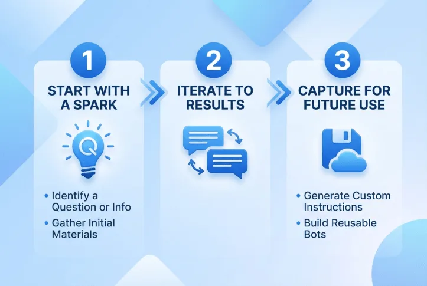
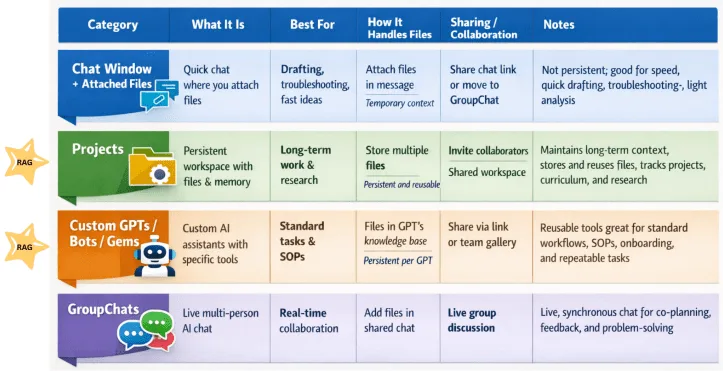

Most lawyers meet generative AI the same way: they open a chatbot and start typing. That is a fine way to get a feel for the tool, but it is a poor way to build a practice around it. There are two more deliberate approaches, and knowing which one you are using keeps you honest about what the tool is actually doing for you. One begins with a problem worth solving. The other begins with a task the tool does well. Both can work. Neither one changes a single duty you already carry.
The two approaches
Same tool, two different starting points.
Start with the problem
Begin with a real, recurring pain point in your practice — the thing that eats your evenings, delays your filings, or costs the client money. Name it, then ask whether AI can measurably reduce it: hours saved, turnaround shortened, a first draft where there used to be a blank page. AI becomes a targeted answer to a defined problem, not a gadget in search of a use.
You are trying to relieve a bottleneck that shows up across many matters, and you can point to the time or cost it takes today.
- Turning a stack of discovery into a first-pass timeline and issue list you then verify
- Drafting the routine parts of a suppression motion so you spend your hours on the argument, not the boilerplate
- Producing a plain-language explainer of a plea offer for a client, which you review before sending
- Summarizing a long interview or bodycam transcript into points you confirm against the source
Start with the task
Begin with the kind of work, not the problem. Look for tasks that are repetitive, data-heavy, generative, or predictable — the places AI is genuinely good — and drop the tool into that one step. You are not redesigning the practice; you are augmenting a discrete task where the model earns its keep and the risk is easy to bound.
You want a quick, low-stakes win you can adopt today without changing how the whole office runs.
- Reformatting notes into a clean, consistent memo structure
- Generating a first set of cross-examination questions from a witness statement to react to and cut
- Rewriting a dense paragraph into jury-plain language
- Brainstorming defense theories to pressure-test, never to adopt unread
How they differ
| Start with the problem | Start with the task | |
|---|---|---|
| Starting point | A recurring pain point in the practice | A specific kind of task the tool does well |
| Question you ask | "What is this costing me, and can AI cut it?" | "Which step here is repetitive or generative?" |
| Scope | Systemic — changes a workflow | Contained — augments one task |
| Payoff | Larger, measurable, slower to stand up | Smaller, immediate, easy to adopt |
| Main risk | Over-building around an unproven tool | A pile of small wins that never add up to a system |
Choosing between them
You do not have to pick one forever. Most practices start with the task to build confidence — a few contained wins that prove the tool and teach its limits — then graduate to the problem once they can see where the real hours go. If a task keeps recurring across matters and the time adds up, that is your signal that a task-level habit has grown into a problem worth solving deliberately. Whichever door you come in, the lawyer stays the one who decides.
A workflow for either approach
Whichever door you came in, the same three moves carry the work from a rough idea to something you can reuse.
Start with a spark
Name the question or the information problem: a suppression issue, a pattern buried in discovery, a plea you need to explain plainly. Then gather the source materials you trust — the statute, a fictional or de-identified fact pattern, your own templates.
Iterate to results
Work in dialogue with the tool. Refine the output through feedback and follow-up prompts until it holds up. This back-and-forth is where the value lives, and where your judgment stays in charge.
Capture for future use
Turn a good result into something reusable. Ask the tool to write custom instructions from the conversation that worked, then build a reusable assistant so the next matter starts ahead. Keep it to process and public authority, never privileged facts.

Ground it in your own trusted files
Retrieval-augmented generation, or RAG, is the single biggest reliability upgrade for either approach.
Instead of leaning on the model’s general training, a RAG tool answers from documents you choose and trust. Environments like Projects, NotebookLM, Custom GPTs, Google Gems, and Bots give the model contextual grounding: it retrieves from your own files rather than its training data alone, which produces more reliable, predictable output aligned to how you actually practice.
- Why it matters for the defense. Grounding is what turns a plausible-sounding tool into a checkable one. Pair the model with the authority and templates you trust, plus custom instructions that capture the process that worked, and it generates output that matches your expectations — and is far less likely to fabricate.
- Where to keep your files. The chart below sorts the options: a chat window with attached files for quick, temporary drafting; Projects for persistent, reusable work; Custom GPTs, Gems, and Bots for standard tasks and SOPs; group chats for live collaboration. The two marked RAG — Projects and Custom GPTs/Bots — keep and reuse your materials.
- The line that does not move. RAG grounds the model in your files, but confidentiality still governs. Use fictional or de-identified facts in consumer tools, and never upload privileged client material to a tool whose data handling you have not vetted.

The RAG explanation and three-step workflow are adapted for defense practice from Miguel Guhlin, Automating Office Tasks with AI.
Prompting habits that carry either approach
The approach sets your goal; the prompt sets the quality. Six habits do most of the work.
- Be specific. "Draft a three-paragraph fact summary for a suppression motion" beats "summarize this."
- Assign a role. "You are a Texas criminal defense attorney reviewing a police report…" focuses the model.
- Provide context. Give the charge, the posture, the audience, and the purpose — using fictional or de-identified facts only.
- Give examples. Show the format or style you want, such as a sample heading or the structure of a good issue list.
- Set constraints. Word count, tone, what to leave out, and what not to assert as settled law.
- Request structure. Ask for headings, numbered issues, or a table so the output is easy to check.
The line that does not move
Neither approach turns a draft into a decision. Every AI output is a draft for attorney review, and every citation the model gives you is a lead to verify against the reporter, not an authority to file. Never put confidential, privileged, or client-identifying facts into a consumer chatbot. Competence, confidentiality, supervision, and candor to the court reach AI-assisted work exactly as they reach a new associate's draft. Start with the problem or start with the task — but finish as the lawyer.